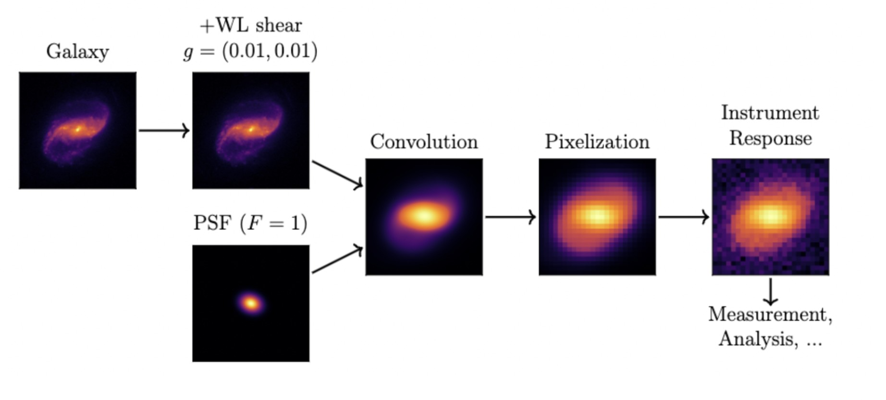
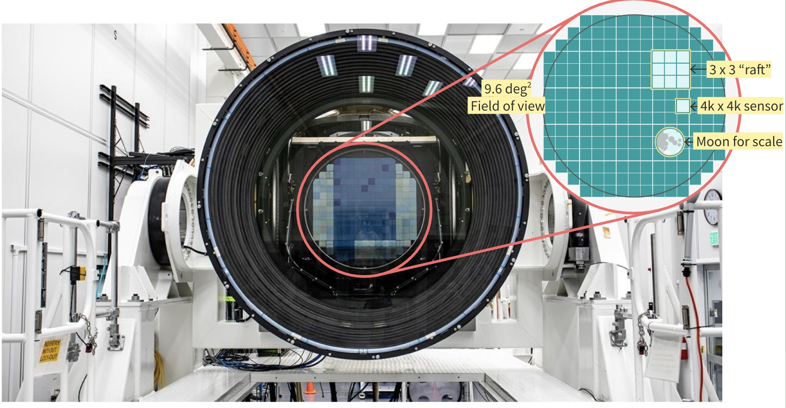
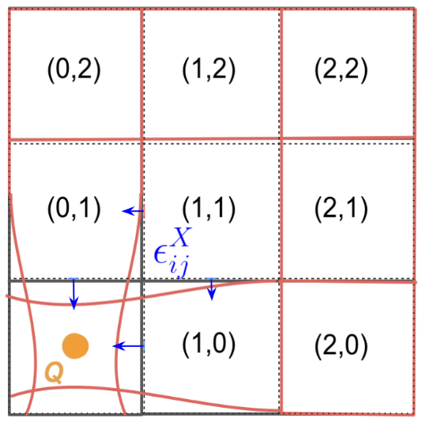
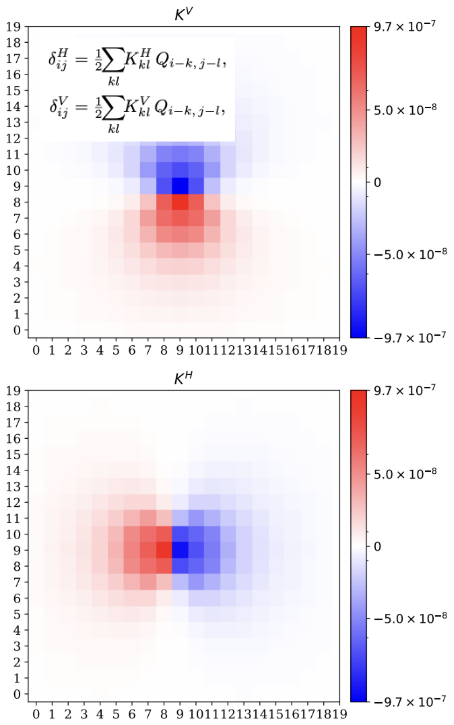
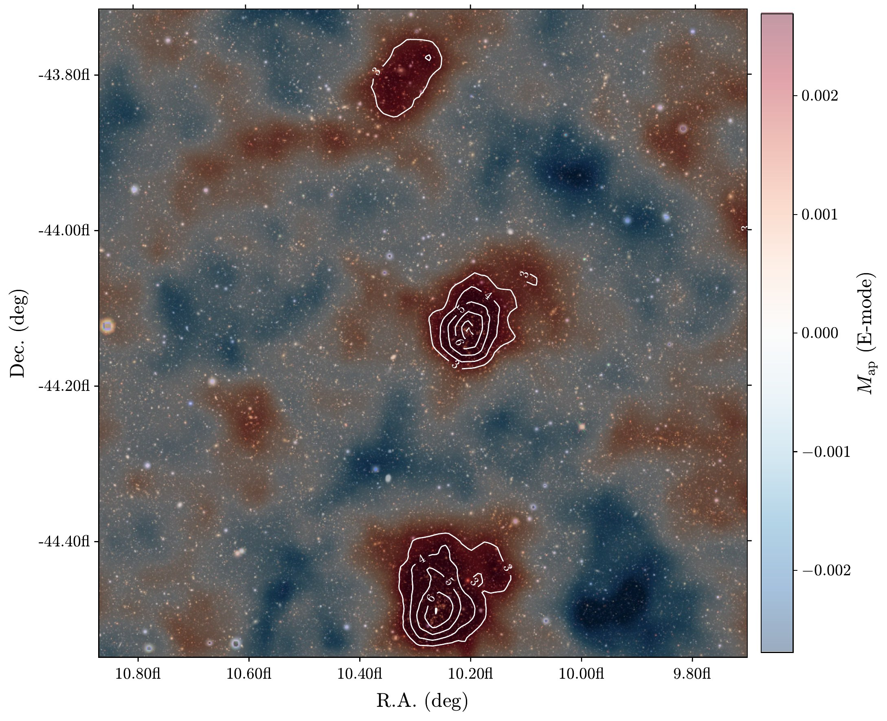
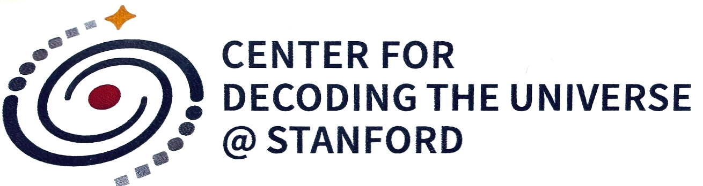
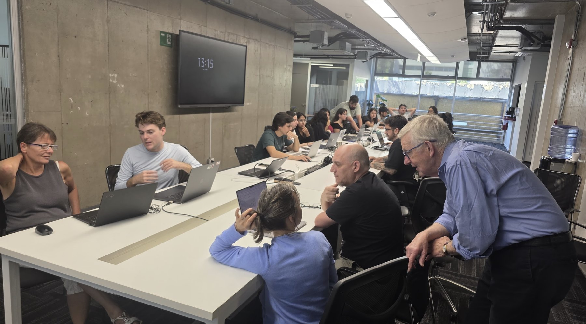

From pixels to cosmological parameters
I build and validate physics-driven algorithms that turn raw survey pixels into data precise enough for cosmology.
Pixel Physics
A CCD is not a perfect photon counter. In Rubin's thick, fully-depleted sensors, electric fields, readout electronics, and the charge already in a pixel all leave a mark on the image, most notably the brighter-fatter effect, where bright stars appear larger than faint ones. Every downstream measurement inherits these errors, from supernova photometry to galaxy shapes, so removing them is what lets LSST reach the precision its dark energy science needs.
I lead instrument signature removal development, commissioning, and validation for the Rubin Science Pipelines. I developed a physically motivated brighter-fatter correction and used it to define a new full-well metric for LSSTCam sensors, and I build and validate the camera's calibration products.




Weak Gravitational Lensing & Galaxy Clusters
Mass bends light, so foreground matter slightly stretches the images of more distant galaxies. The effect is about one percent, invisible in a single galaxy but measurable across millions. Because it responds to all mass, dark or luminous, lensing maps dark matter, weighs galaxy clusters, and constrains how structure and dark energy have evolved.
In DESC I work on forward models that trace image systematics into shear measurements, along with PSF diagnostics, shear mapping, photometric redshifts, and cluster cosmology on Rubin data previews.

ML/AI for Survey Data
Rubin will catalog tens of billions of stars and galaxies, far more than anyone can inspect by hand. Machine learning handles tasks like separating stars from galaxies, estimating redshifts, and flagging image artifacts quickly and consistently. For cosmology, these models are only useful when their errors are measured and carried into the error budget.
I have built star–galaxy classifiers for Rubin Data Preview 2 and stray-light classifiers for survey visits. In my thesis I used deep learning to model Galactic γ-ray emission, tightening the systematic errors on the Fermi-LAT Galactic Center excess.

